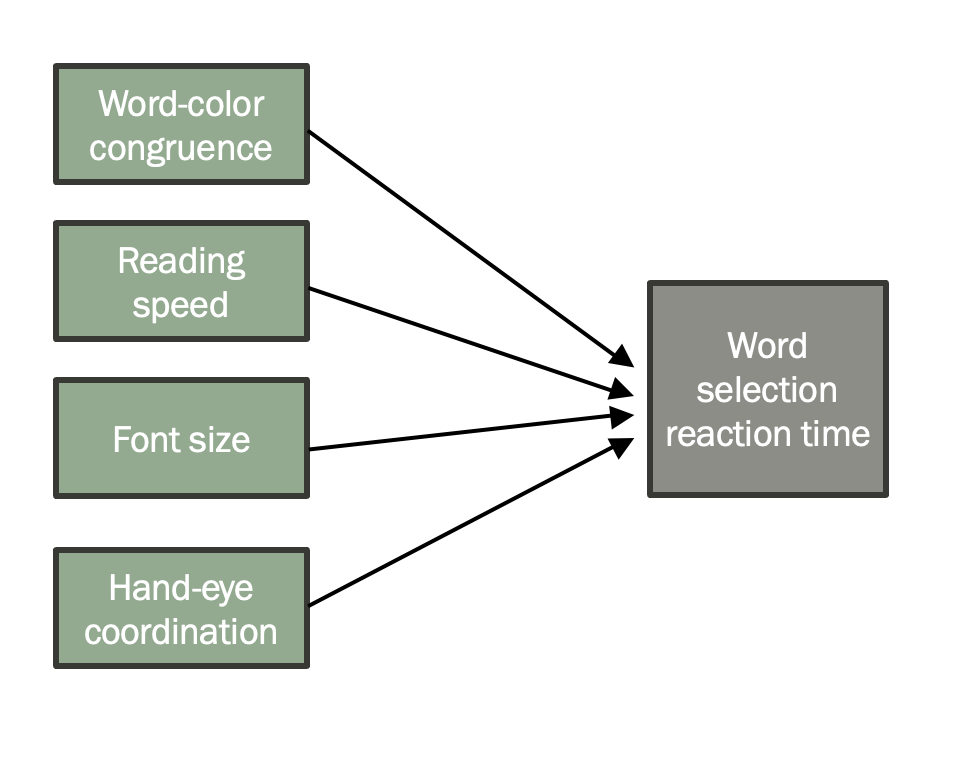
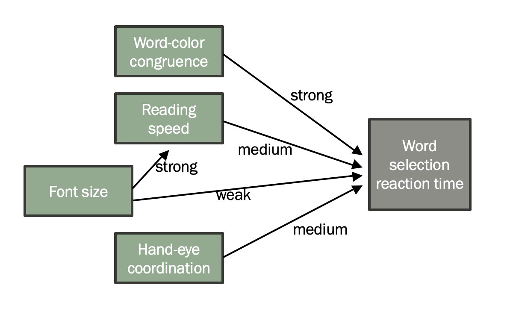

Previous: Chapter 8 - Where Data Come From
# This chapter uses the package ggformula, which takes a few moments to download on Google Colab.
# Run this first so it's ready by the time you need it
install.packages("ggformula")
install.packages("dplyr")
library(ggformula)
library(dplyr)
Chapter 9 - Modeling the Data Generation Process#
In the prior chapter we began to talk about the data generation process. To understand the data generation process is to break down what other factors create the distribution of an outcome variable, and can therefor explain variation in the outcome variable. If anything, this is the idea underlying the use of statistics in psychology. The majority of this field is dedicated to studying the data generation process for the how the human mind works. Anytime we form a hypothesis about how variables are related to each other (e.g., “how does income relate to sleep quality?” or “are stressed teachers more punative than non-stressed teachers?”), we are proposing a data generation process. So this is a concept to pay attention to!
The framework we use to describe the data generation process is called a model. A model captures:
The inputs that go into creating the output
The relationships among all variables in the process
While a model contains these pieces of information, you can represent a model in different ways. Below are some types of models.
9.1 Deterministic models#
Sometimes we understand a data generation process really well. This means we are able to build a detailed model of it. We know exactly what inputs matter, and exactly how they relate to each other and to the outcome.
Consider a concept like gravity: more than 300 years ago, Isaac Newton described an equation for the gravitational force between two objects.
This equation is a model because it describes both the inputs that determine the value of gravitational force (object masses, the distance between them, and a force parameter G), and it describes the relationships between these inputs and the output (multiply the masses together, divide by the square of the distance, multiply all by G).
This model is very accurate. For essentially any two bodies of mass, plugging in the appropriate input values to this model will creat a prediction of gravitational force that matches what actually occurs. Highly accurate models like this, where we fully understand the data generation process and can accurately make predictions of outcomes, are called deterministic models. We can determine what any output will be just by knowing the input values.
9.2 Conceptual models#
Unfortunately for us as psychologists (and also much of the life sciences), we rarely get to work with deterministic models. As complex as the math seems in many physics problems, it is only possible to come up with that math in the first place because the data generation processes are relatively simple. When it comes to human thought and behavior, there are so many inputs and relationships among them that we have only begun to scratch the surface of the data generation process.
Consider a well-studied psychological phenomenon, like the Stroop Effect. This effect is highly replicable and strong - switching up the color in which a color-word is written in greatly slows down how fast people process the word and choose the right answer. Word-color congruence is a variable that explains variation in reaction time. But even if this effect is well-documented, it’s only one part of the data generation process of the outcome variable. What else goes into determining exactly how fast someone will select a word from a list? Their reading speed? Font size? Hand-eye coordination? How big of an effect is the Stroop Effect relative to these other inputs, and how do they relate to each other? Could you build an equation for reaction time?
From this example, you can see how we don’t actually know that much about what exactly determines a fairly basic behavior - selecting a word quickly. Just imagine how much additional work we’d have to do to deterministically model something more complex, like political behaviors.
However, this doesn’t mean we can’t model psychological processes at all. But it does mean we have to relax our standards a bit of what a model is. In this case, we can build a conceptual model. In a conceptual model, we don’t know the perfect equation for determining an output. But we have 1) some idea of what some of the inputs are, and 2) an idea about what variables are related to each other, in some way.
While we don’t have enough information in a conceptual model to make an equation like in a deterministic model, it is often helpful to draw out what information we do have. For example, here is a possible conceptual model of the data generation process for the Stroop Effect discussed above. This kind of illustration is called a path diagram.
In this model, we’ve identified some of the input variables (green) that are a part of the data generation process for the output variable reaction time (gray). We’ve also identified that they’re related to the output variable in such a way that their values contribute to the value of the output variable, as indicated by the arrows connecting the inputs to the output.
Maybe our idea of the data generation process for reaction time is more detailed than this. Maybe we also think that there are relationships among the inputs themselves (e.g., font size could influence someone’s natural reading speed). In addition, we might think some inputs are more important than others for determining reaction time, such that the effect of the inputs could be strong, medium, or weak. That more detailed model might look something like this:
If you are doing research on some variable, you likely have at least some idea about the data generation process behind it. That’s probably why you’re doing research in the first place - to see if your idea is correct about what input(s) is important for the output. This means you already have a conceptual model! Your model could be very basic (one input related to an output) or highly detailed, but it’s important to make your model explicit so you understand what you’re trying to study.
9.3 Statistical models#
Our goal in research is often to take a conceptual model and try to move it closer to being a deterministic model - to learn more information about the data generation process so we can use it to make better predictions and inferences about the population.
Enter a third type of model, a statistical model. A deterministic model is built by knowing the full population of an output and all relevant information about the inputs and relationships among variables. A conceptual model has no real world information about those things, just some guesses. A statistical model is an attempt to bridge the gap - to come up with a simplified equation that describes part of the data generation process, or at least what it looks like within a subsample of data we are able to collect. A statistical model of the Stroop Effect might look like:
where each input is included, and the strength of the effect for each input is a numeric value encoded as a \(\beta\) parameter. Once we have a model like this, if we have a congruence, speed, font, and coordination value for some data point i, we can predict a reaction time value that is hopefully pretty close to what that value would really be.
The heart of inferential statistics is building these sorts of models, so we will now spend the rest of the semester creating them and evaluating the ones we’ve build. However, before we start, there is something really important to keep in mind about statistical models: all statistical models are wrong! At least, wrong by some amount. These are simplfied equations, that contain some (but unlikely all) of the inputs and basic (but probably overly basic) relationships among all the variables. This is an attempt to approximate what the true data generation process is in the population, but we are very unlikely to get it exactly right since we almost always have only a sample of data. If we use the above equation to predict values of reaction time, our predictions will probably be different from true reaction times values by a bit. Therefor, if we wanted to write the equation for the true data generation process, we could write something like this:
where the “error” term accounts for all the parts of the data generation process we don’t know about, but if we did, would make our predictions of reaction time accurate. We can thus simplify the form a statistical model as follows:
Building a statistical model is the process of choosing what variables should go into the MODEL portion of that equation. Building a good statistical model is the process of minimizing how much error is unaccounted for by our model. Whether we are using statistics to predict new data or to infer what the true data generation process is in the population, having a good statistical model will help you.
9.4 The null model#
Let’s now dive into building our own statistical models! But rather than a big long equation like the proposed model above, let’s start with the simplest kind a statistical model we can build. At its most basic level, a statistical model can be thought of as an equation that produces a predicted score for each observation in a data distribution. What is the simplest possible equation you could write?
The simplest models we could consider generates the same predicted score for every observation in a distribution, no matter its real value. In other words, there is just one number on the right side of the equation, and we are always predicting that the outcome variable has that value. Something like:
Obviously, this model for the data generation process is wrong. For one thing, reaction time is a distribution, but there is no variability in the number 50. However, this kind of super basic statistical model is actually very useful because it serves as a baseline to compare our later statistical models to. This baseline model that always makes the same prediction is called the null model or the empty model. This is because there are no predictor variables in it.
To build a null model, we need to choose just one number to try and characterize a whole distribution. Does this sound familiar? If you had to pick one number to represent an entire distribution, how would you pick it? Put another way - how were we previously summarizing distributions of variables with a single number?
Depending on how a variable is measured (e.g., quantitative or categorical), and on the shape of its distribution, we will use different procedures for choosing one number as a model. For a quantitative variable whose distribution is roughly normal, a number right in the middle (the mean) might be the best null model. Remember, we aren’t saying that such a simple model is a good model. We’re simply establishing a baseline prediction to make for the outcome variable when we don’t know anything about the data generation process. In a normal distribution, the mean is the most commonly-occuring value, so that is the safest prediction to make in the absense of any other information. If a distribution is skewed left or right, the best null model might be the median instead. For a categorical variable, the best null model is generally the category that is most frequent (the mode).
Let’s zero in on just distributions of quantitative variables for now. Take a look at the two distributions below for variables 1 and 2.

A single number, even a well-chosen number, is not a very good model. It may be a better model for variable 1 than variable 2 above, but it’s still not very good at predicting what any one value on the distribution will be. Most scores are not the same as the number we choose as the model.
This is where the “error” term of a model comes in: once we choose a number to model a distribution, we can think of the variation around that number as error. It is the stuff we’re missing that would be needed to adjust what we’re predicting into what the actual value is. As we can see above, a one-number model for a distribution with less spread seems to have less error, and thus a better fit, than a one-number model for a distribution with more spread. The reason for this is that the error around the model is greater for the distribution with more spread.
Our null model always predicts the same outcome value because it always uses the same value as an input (the mean of the outcome variable’s distribution). If the mean is our model, then using the model to explain our data simply means calculating the mean of the data distribution.
Let’s think this through in the context of students’ thumb lengths. We will use a tiny dataset, which we’ll put in a data frame called tiny_data.
student_ID <- c(1, 2, 3, 4, 5, 6)
thumb <- c(56, 60, 61, 63, 64, 68)
tiny_data <- data.frame(student_ID, thumb)
tiny_data
We can make a distribution of the variable thumb using gf_histogram from the package ggformula. We can also add a visual line to denote where the mean is, using the function gf_vline to add a layer to this plot:
data_mean <- mean(tiny_data$thumb)
gf_histogram(~ thumb, data = tiny_data) %>% #pipe the base histogram into a layer that adds the mean line
gf_vline(., xintercept = data_mean, color = "blue")
Remember that our model is not the actual thumb values in tiny_data, but our guess at what they will be. In this case, we’re always guessing the mean (the blue line). Always guessing the same number for every data point is easy, but later you will learn to fit more complex models to your data.
9.5 Automatically building a model#
In the example above, we chose our model ahead of time: thumb = 62. To do this, we had to calculate that value ourselves. But usually you don’t know what exact numbers to use in the equation of a statistical model. In R, there is a function you can use to automatically build a model that will be the best description of your data, given a model format that you specify.
The R function we are going to use is lm(), which stands for “linear model.” (We’ll say more about why it’s called that in a later chapter.) For lm() to work, you need to pass it a formula, rather than an equation.
What’s the difference? Remember when we were graphing things with ggformula, we needed to give the function a formula to tell R which variable should be on the y-axis and which should be on the x-axis: e.g., Thumb ~ Sex. Because we’re using a ~ instead of a = here, this is not the same thing as saying “The value of Thumb is exactly proportional to the value of Sex.” Instead, it is saying a more general statement “Thumb varies by Sex.” Passing a formula like this to lm() tells the function to build an exact statistical equation that would best fit the type of relationship the formula describes.
For a null model, we don’t have any variables to use as explanatory variables. We just want R to find the best-fitting single-number summary of the outcome variable. In this case, the formula would look like Thumb ~ NULL. “NULL” is a special value in R (like TRUE or FALSE) that tells the computer to treat that spot as empty. You can see now why this is known as a null model! The second argument lm() needs is a dataset to fit the model to.
Here’s the code we use to fit the empty model, followed by the output.
lm(thumb ~ NULL, data = tiny_data)
The output of this command may seem a little strange right now with words like “Coefficients” and “Intercept.” We’ll cover what those mean a little later. But it does give you back the mean of the distribution (62), as expected. Thus, this function finds the best-fitting number to use as our model, given a more general formula we specified. To then make a more specific statistical model in equation format, we’d simply slot that value in on the right side of the equation:
Automatically finding a solution to which number best represents the distribution of the outcome variable is called “fitting the model”. It will be helpful to save the results of this fitted model in an R object. Here’s code that uses lm() to fit the null model, then saves the results in an R object called tiny_empty_model:
tiny_empty_model <- lm(thumb ~ NULL, data = tiny_data)
If you want to see what the model estimates are after running this code, you can just type the name of the object you saved the model to:
tiny_empty_model
Now that you have fit the empty model to the tiny set of data, try using lm() to fit the empty model to the full studentdata dataset.
studentdata <- read.csv("https://raw.githubusercontent.com/smburns47/Psyc158/main/studentdata.csv")
# modify this to fit the empty model of Thumb
empty_model <- #YOUR CODE HERE
# this prints the best-fitting number
empty_model
# make a histogram of Thumb and draw the line for the mean
#gf_histogram(#YOUR CODE HERE) %>%
# gf_vline(., xintercept = #YOUR CODE HERE)
9.6 Thinking about error#
Using our tiny data set, we found the mean thumb length to be 62mm. Sticking that value into the equation of a statistical model, if we were predicting what a seventh observation might be, we’d go with 62mm. But if we take the mean and look backwards at the data we have already collected, we could also generate a “predicted” thumb length for each of the data points we already have. This prediction answers the question: what would our model have predicted this thumb length to be if we hadn’t collected the data?
When we create a model and fit it in R, we aren’t just printing out the results of the fitting procedure. We are creating a model object. This object has properties we can access with the $ symbol, just as you access variables in a data frame object. When a model object is created, one of its properties fitted.values is the predictions that model would make for every data point in the dataset.
There’s an R function that will actually do this for you. Here’s how we can use it to generate the predicted thumb lengths for each of the six students in the tiny dataset. Remember, we already fit the model and saved the results in tiny_empty_model:
tiny_empty_model$fitted.values
If you forget about that model object property, there’s also an R function predict() to access them and return them to you. Remember, there are often multiple ways to do the same thing in R, so pick whichever way you want to “speak” it!
predict(tiny_empty_model)
Why would we want to create predicted thumb lengths for these six students when we already know their actual thumb lengths? We will go into this a lot more in the next chapter, but for now, the reason is so we can get a sense of just how wrong our automatically generated statistical model is. The value of everyone’s thumb lengths isn’t actually 62, so we want to know how far each of our data points are from the prediction that our model would have made. It gives us a rough idea of how well our model fits our current data and how big the error is. That’s important if we’re ultimately trying to build a model that gets us close to the true data generation process.
In order to use these predicted scores as a way of seeing error, we first need to save the prediction for each student in the dataset. When there is only one prediction for everyone, as with the null model, it seems like overkill to save the predictions but just go with it for now. Later you will see how useful it is to save the individual predicted scores. For example, if we save the predicted score for each student in a new variable called predicted, we can then subtract each student’s actual thumb length from their predicted thumb length to see how far off our predictions were.
Use the function predict() and save the predicted thumb lengths for each of the six students as a new variable in the tiny_data dataset. Then, print the new contents of tiny_data.
# modify this to save the predictions from the tiny_empty_model
tiny_data$predicted <-
# this prints tiny_data
tiny_data
We have developed the idea of a general statistical model to take the form DATA = MODEL. However, since all statistical models are wrong, plugging in a value (like the mean) for the MODEL spot will not perfectly calculate what the value should be in the DATA spot. To do a better job at guessing DATA we’d probably need to add more stuff to the model side of the equation. However, right now we don’t know anything else besides the mean of DATA. So in order to recognize how unperfect our model is, we rewrite the equation as:
Even if we don’t know what causes error in a model, so long as we recognize how much it is (how much the model misses the mark for each value of data), we can technically recompute each actual data value perfectly.
Therefore, we can calculate error in our data set by just shuffling this equation around to get the formula:
Using this equation, if someone has a thumb length larger than the mean (e.g., 68), then their error in our model is +6. If they have a thumb length lower than the mean (e.g., 61) then we can calculate their error as -1.
We generally call this calculated error the residual - the difference between our model’s prediction and an actual observed score. The word residual should evoke the stuff that remains because the residual is the leftover quantity from our data once we take out the variance explained by our model.
To find these errors (or residuals) in an empty model you can just subtract the mean from each data point. In R we could just run this code to get the residuals:
tiny_data$thumb - tiny_data$predicted
The numbers in the output indicate, for each student in the data frame, what their residual is after subtracting out the model (which is the mean in this case).
Modify the following code to save these residuals in a new variable in tiny_data called residual.
# modify this to save the residuals from the tiny_empty_model
tiny_data$residual <-
tiny_data
These residuals (or “leftovers”) are so important in modeling that they are also saved as a property of the model object when it is created, called residuals.
tiny_empty_model$residuals
Or if you prefer the function route, using the resid() function:
resid(tiny_empty_model)
Notice that we get the same numbers as the ones we calculated previously. But instead of passing the data and the model’s predictions as arguments, we just tell R which model to get the residuals from.
Modify the following code to save the residuals that we get using the resid() function in the tiny_data data frame. Give the resulting variable a new name easy_residual.
# modify this to save the residuals from the tiny_empty_model (calculate them the easy way)
tiny_data$easy_residual <-
tiny_data
Note that the variables residual and easy_residual should be identical. You only used different methods to get the same residuals.
Now that you have looked in detail at the tiny set of data, explore the predictions and residuals from the empty_model fit earlier from the full set of studentdata data. Add them as new variables (Predicted and Residual) to the studentdata data frame.
# this code from before fits the empty model for Fingers
null_model <- lm(Thumb ~ NULL, data = studentdata)
# generate predictions from the Empty.model
studentdata$Predicted <-
# generate residuals from the Empty.model
studentdata$Residual <-
# this prints out 10 lines of studentdata
head(select(studentdata, Thumb, Predicted, Residual), 10)
9.7 More on mathematical notation of a statistical model#
The way we’ve used so far for writing a statistical model, outcomei = model + errori, uses mathematical structure to show how to calculate some value i based on a model and that item’s residual. Let’s now go all the way to writing out a model in formal mathematical notation, without using words:
Here, “ei” stands for the ith error or residual. And as you may recall from chapter 5, putting a line above Y in this equation, making it “Y-bar”, indicates the mean value of Y. Thus this equation means “the ith value of Y is equal to the mean of Y plus the ith residual.”
Another way you could write this is:
The Yi with an arrow on top, pronounced “Y-hat”, means “the predicted value of Yi.” So, this equation simply states that each value of Yi can be calculated as the sum of its predicted value based on the model, and its deviation from that predicted value.
In our tiny dataset, for example, student 1 had a thumb length of 56. So, Y1 = 56. Under our simple model we used the mean as the predicted value for all students, so Y^1 = Y¯ = 62. Therefore, e1 would have to be -6 to make the equation true — the exact value of the residual we calculated for student 1.
As we develop more complex models, we still will end up with a single predicted value of Y^i for each score based on our model. But we will predict this value using more than just the mean.
9.8 Notation for the General Linear Model#
Finally, we will complicate things a little more and introduce one more form of our DATA = MODEL + ERROR formulation called the General Linear Model (GLM) notation. The GLM is a generic equation that can be used to represent many different models with only simple adjustments. The GLM notation for our null model would be:
This is a more abstract version of the equation above; we have substituted b0 (we read this as “b sub 0”) for the mean, Y¯. Don’t be concerned if it doesn’t make complete sense why we’re replacing perfectly useful words with mathematical symbols. This is one of those things that will take time to understand. The main thing to know for now is that b0 can represent the mean, but it doesn’t have to.
For our simple model (the null model) it does represents the mean. But for other models, and other situations, it can represent other values. For example, if our outcome variable were categorical, the interpretation of b0 would need to be adjusted to be the mode, which is the best single predictor of the next observation’s value on a categorical variable.
Indeed, this flexibility is what makes the General Linear Model general. Whenever you see a GLM model statement, you should think carefully about what, in the particular situation, each symbol represents.
9.9 Statistics and parameters#
In summary, we ultimately care about why an outcome variable looks the way it does - what is the data generation process that created it? Knowing this helps us infer knowledge about how the world works and make predictions for new data. Usually we don’t know the data generation process, but we can use data to help us build statistical models that approximate it.
However our approximations are unlikely to match the true data generation process - there will always be some error in our models. This is because we’re likely not including all pieces of the puzzle that is the data generation process. In addition, like when we simulated data last chapter, sometimes a sample of data can look different from the population from which it came because of the forces of randomness.
Within our data sample, we can calculate the exact mean of the distribution, and the exact size of the errors. When we do this, we are calculating a statistic. A statistic is anything you can compute to summarize something about your data; the mean is one example of a statistic, the standard deviation is another.
But we can’t calculate the mean of the population; the population distribution is unknown. Instead we use the mean we calculate from our data as an estimate of the mean of the population.
The mean of the population is an example of what’s called a parameter. A parameter is a number that summarizes something about a population. Whereas statistics are computed, parameters are estimated (since the population distribution is unknown). We use statistics as estimates because we don’t generally know what the true parameter is.
Notation is one way we keep our thinking straight about what we are trying to calculate, and what the results of our calculations mean. Because the distinction between statistics (or estimates) and parameters is so critical, we use different notation to distinguish them.
If we want to represent the mean calculated from data, we typically use the notation Y¯ (or sometimes other letters, like X¯). To represent the mean of the population, the parameter we are trying to estimate, we typically use the Greek letter μ (pronounced “mew”).
The same distinction shows up in the notation of the General Linear Model. The null model we have discussed so far, which is calculated from data, is written like this (as you know):
The model of the data generation process that we are trying to estimate when we fit the empty model is represented like this:
Note that in this model of the population we have replaced the estimators b0 and ei with the Greek letters β0 (pronounced “beta sub 0”) and εi (pronounced “epsilon sub i”). b0 is an estimate for β0, which represents the mean of the population; and ei is an estimate of εi.
The differences in notation may seem subtle and nitpicky. But it is really, really important in statistics to distinguish between your data sample and the population it is trying to estimate, and keep those separate in your mind. As a general rule, whenever you see Greek letters you can be pretty sure we are talking about parameters of the population. Latin letters are generally used to represent estimates calculated from data.
Let’s go back to using lm() to fit a model to the values thumb in tiny_data:
lm(thumb ~ NULL, data = tiny_data)
When a model is fit, it calculates coefficients, or numbers that should be used in a statistical model equation. In the empty model with one coefficient, this is the number that should be used as the value of b0 for our data. That number, in turn, is our estimate of the parameter β0.
Chapter summary#
After reading this chapter, you should be able to:
Explain what a model is and why we build them
Describe the difference between deterministic, conceptual, and statistical models
Write a statistical model in GLM notation
Automatically generate a statistical model in R using lm()
Define what a residual is
Describe the difference between a statistic and a parameter